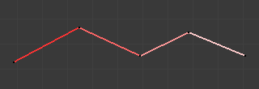
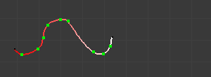
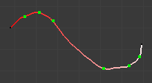
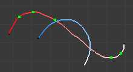

Introduction¶
Reference
| Editor: | 3D View |
|---|---|
| Mode: | Edit Mode |
| Panel: |

The Bone Sketching panel.
If you think that creating a whole rig by hand, bone after bone, is quite boring, be happy: some Blender developers had the same feeling, and created the Skeleton Sketching tool, formerly the Etch-a-ton tool, which basically allows you to "draw" (sketch) whole chains of bones at once.
Skeleton Sketching is obviously only available in Edit Mode, in the 3D Views. You control it through its Skeleton Sketching panel in the Transform panel, which you can open with N. Use the mouse LMB to draw strokes, and RMB for gestures. Showing its tool panel will not enable sketching. You must tick the checkbox next to Skeleton Sketching to start drawing bone chains (otherwise, you remain in the standard Edit Mode...).
Sketching is done in two steps:
- Drawing Chains (called "strokes"). Each stroke corresponds to a chain of bones.
- Converting to Bones, using different methods.
The point of view is important, as it determines the future bones' roll angle: the Z axis of a future bone will be aligned with the Z axis of the 3D View in which you draw its "parent" stroke (unless you use the Template converting method...). Strokes are drawn in the current view plane passing through the 3D cursor, but you can create somewhat "3D" strokes using the Adjust drawing option in different views (see below).
If you enable the small Quick Sketch option, the two steps are merged into one: once you have finalized the drawing of a stroke (see Drawing Chains), it is immediately converted to bones (using the current active method) and deleted. This option makes bone sketching quick and efficient, but you lose all the advanced stroke editing possibilities.
Sketches are not saved into blend-files, so you cannot interrupt a sketching session without losing all your work! Note also that the sketching is common to the whole Blender session, i.e. there is only one set of strokes (one sketch) in Blender, and not one per armature, or even per file...
Drawing Chains¶
So, each stroke you draw will be a chain of bones, oriented from the starting point (the reddest or most orange part of the stroke) to its end (its whitest part). A stroke is made of several segments, delimited by small black dots. There will be at least one bone per segment (except with the Template conversion method), so all black points represent future bones' joints. There are two types of segments, which can be mixed together:
Strokes example.
Straight Segments¶
To create a straight segment, click LMB at its starting point. Then move the mouse cursor, without pressing any button, a dashed red line represents the future segment. Click LMB again to finalize it. Each straight segment of a stroke will always create one and only one bone, whatever convert algorithm you use (except for the Template conversion method).

The first segment has been started with a LMB click and the mouse moved to its end point. |

The first segment has been finalized by a second LMB click, which also started a new segment... |

Repeating these steps, we now have a four-segment polygonal stroke. |
Free Segments¶
To create a free (curved) segment, click and hold LMB at its starting point. Then draw your segment by moving the mouse cursor -- as in any paint program! Release LMB to finalize the segment. You will then be creating a new straight segment, so if you would rather start a new free segment, you must immediately re-press LMB.
The free segments of a stroke will create different number of bones, in different manners, depending on the conversion method used. The future bones' joints for the current selected method are represented by small green dots for each one of those segments, for the selected strokes only.
The free segment drawing uses the same Manhattan Distance setting as the Grease pencil tool (User Preferences, Edit Methods "panel", Grease Pencil group) to control where and when to add a new point to the segment. So if you feel your free segments are too detailed, raise this value a bit, and if you find them too jagged, lower it.

While drawing a first free segment with click and drag LMB. |

The first free segment finalized by releasing LMB. |

If you now move the mouse without pressing LMB again, you will create a straight segment... |
But if you immediately click again and drag LMB you will instead start a new free segment. |
You finalize a whole stroke by clicking RMB. You can cancel the stroke you are drawing by pressing Esc. You can also snap strokes to underlying meshes by holding Ctrl while drawing. By the way, the Peel Objects button at the bottom of the Bone Sketching panel is the same thing as the "monkey" button of the snapping header controls shown when Volume snap element is selected. See the snap to mesh page for details.
Selecting Strokes¶
A stroke can be selected (materialized by a solid red-to-white line), or not (shown as an orange-to-white line) -- see Strokes example. above. As usual, you select a stroke by clicking RMB on it, you add one to/remove one from the current selection with a Shift-RMB click, and A (de)selects all strokes...
Deleting¶
Hitting X or clicking on the Delete button (Bone Sketching panel) deletes the selected strokes (be careful, no warning/confirmation pop-up menu here). See also Gestures.
Modifying Strokes¶
You can adjust, or "redraw" your strokes by enabling the Overdraw Sketching option of the Bone Sketching panel. This will modify the behavior of the strokes drawing (i.e. LMB clicks and/or hold): when you draw, you will not create a new stroke, but rather modify the nearest one.
The part of the old stroke that will be replaced by the new one is drawn in gray. This option does not take into account stroke selection, i.e. all strokes can be modified this way, not just the selected ones... Note also that even if it is enabled, when you draw too far away from any other existing stroke, you will not modify any of them, but rather create a new one, as if Overdraw Sketching was disabled.

Adjusting a stroke: the gray part of the "unselected" (orange) stroke will be replaced by the currently drawn "replacement". |

Stroke adjusted. |
Cảnh báo
Undo/Redo
There is no undo/redo for sketch drawing.
Gestures¶
There quite a few things about strokes editing that are only available through gestures. Gestures are started by clicking and holding Shift-LMB (when you are not already drawing a stroke), and materialized by blue-to-white lines. A gesture can affect several strokes at once.
There is no direct way to cancel a gesture once you have started "drawing" it. So the best thing to do, if you change your mind (or made a "false move"), is to continue to draw until you get a chaotic scribble, crossing your stroke several times. In short, something that the gesture system would never recognize!

An unwanted cut stroke. |
Some random drawing. |

The stroke is still in one piece. |
Cut¶
To cut a segment (i.e. add a new black dot inside it, making two segments out of one), "draw" a straight line crossing the chosen segment where you want to split it.

Gesture. |

Result. |

Reverse¶
To reverse a stroke (i.e. the future chain of bones will be reversed), draw a "C" crossing twice the stroke to reverse.

Gesture. |

Result. |